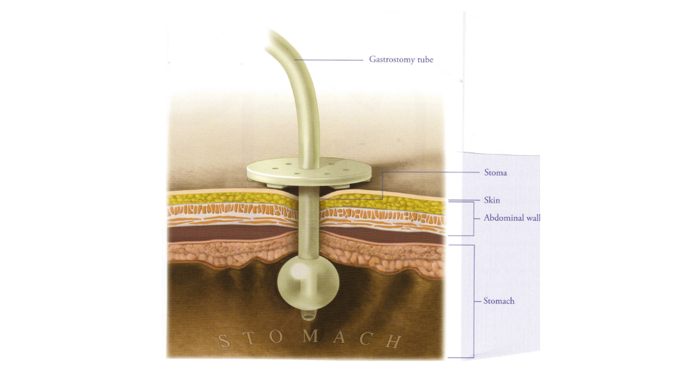
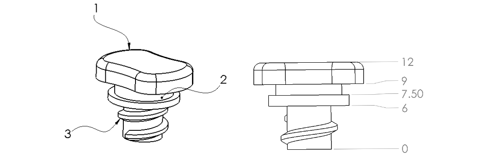
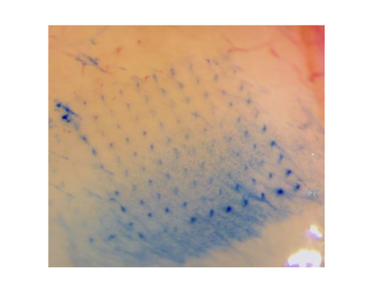

Learning human-like tonal inflections
for studying lip synchronization on a humanoid robot mouth
Gastrostomy Skin Level Device
Design for medical device for patients who
require enteral feeding focused on long-term durability and patient comfort
Electrode Test Setup
Setup for positioning 3D-printed neural implant probes for stimulation testing
Abalone Robot
Novel design for addressing issue of diminishing kelp forests off the Pacific coast of the U.S. and Mexico
Globe Night Light
Design of a small, night light desk ornament along with a full manufacturing and assembly process for 500 units
Redwood Desk Organizer
Adjustable length desk organizer made of repurposed redwood
Resume
Education
Master of Science, Mechanical Engineering
Carnegie Mellon University | 2022-2024
Emphasis: Robotic reinforcement learning for interaction with deformable objects
Achievements: BRIDGE Fellowship (2022 - 2024)
Bachelor of Science, Mechanical Engineering
Rensselaer Polytechnic Institute | 2018-2021
Cumulative GPA: 3.55/4.00
Achievements: Inventors’ Studio Innovator Award (2021)
Work Experience
Graduate Research Assistant
Carnegie Mellon University | Aug. 2022 - present
Researching machine learning methods to train a robot to manipulate clay into desirable shapes (e.g. sphere to cube)
Working with robot hardware, computer vision, and key point detection methods
Mechanical Engineer, Intern
Neuralink | Jan. - June 2022
Neural Implant Imaging Station:
Modeled and built hardware setup and developed image processing program for documenting quality of neural implant’s micron-scale threads, removed 4 manual steps from the end-of-line process
Wafer Processing Fixture:
Designed and tested fixture for processing diced wafers to improve solvent flow in chemical baths, megasonic cleaning, and vapor drying processes
Undergraduate Researcher
Rensselaer Polytechnic Institute | Aug. - Dec. 2021
Investigated outlier detection in image processing program written for TFM experiment to provide more accurate results for cellular traction forces in Experimental Cell and Tissue Biomechanics Lab
Mechanical Engineer, Intern
Neuralink | May - Aug. 2021
Neural Implant Testing Fixture:
Designed and 3D printed fixture for end-of-line electrode impedance testing implemented on neural implant R&D production line
Designed parts for machining and injection molding and drafted technical drawings
Manufacturing Technician, Intern
Neuralink | Jan. - May 2021
Responsible for executing all steps of neural implant production process (incl. stress testing, soldering, die bonding, thermal sealing, and leak testing)
Skills
Design:
Solidworks, Siemens NX, GD&T, Tolerance Stack-up, Material Selection, Design for Machining,
Design for Plastic Injection Molding
Hi, thanks for visiting my website! My name is Charlotte and I'm a first-year mechanical engineering
master's student at Carnegie Mellon. I enjoy problem solving, designing, and making, especially with
teams of other passionate engineers and researchers with different backgrounds and interests. I'm
fascinated by machine learning algorithms and their ability to learn and predict traditional mechanical
systems which is why I joined the Mechanics and AI Lab at CMU where I currently work on a project involving
robotic manipulation of deformable objects. Outside of class I enjoy reading, trail running, crafting,
and climbing.
Robot Sound Classification
Learning human-like tonal inflections
for studying lip synchronization on a humanoid robot mouth
Background:
This project attempts to quantify the human-likeness of sound produced by
a humanoid robot. The robot has no speakers and produces sound from a variable pitch pneumatic
sound generator and resonance tube deformed by a series of servo motors along its length. The
robot was designed and built by my groupmate, Maddy Weaver, and we used it to study human-like
sound using deep learning methods as part of Carnegie Mellon's Introduction to Machine Learning for
Engineers course.
Objectives:
The goal of quantifying the human-likeness of audio produced by the robot is
we can then use this metric to rate each sound and iteratively update the robot's hardware to
produce a more human-like sound.
Fig. 1: Humanoid robot mouth used for this project
Audio Processing:
The way in which data is processed before inputting it into any kind of
machine learning or deep learning model is fundamental. In the domain of audio, there are
several concepts that aid in data pre-processing.
Mel Spectrograms:
Digital representations of audio signals most often begin as the relationship
of amplitude and time. However, to extract useful information from these signals, a Fourier
transform can be applied to decompose a signal into its individual frequencies and their
amplitudes and therefore convert from the time to frequency domain.
Fig. 2: Example audio signal represented by signal amplitude in
the time domain as well as in the frequency domain after applying a Fourier transform
(Image Source: insightincmiami.org)
Most speech and music signals are non-periodic. This means that to represent
these signals in the frequency domain, a Fast Fourier Transform (FFT) is performed over several
windowed segments of the signal. What results is called a spectrogram. Spectrograms are
visualizations or figures of audio that represent the spectrum of frequencies over time for
an audio recording.
If frequency is converted from Hertz to the Mel Scale, a representation of
frequency that mimics the perception of sound by humans and hence why it is used often in
machine learning, the spectrogram is called a Mel Spectrogram.
Fig. 3: Example Mel Spectrograms of a human (left) and our mouth
robot producing a high-level tone
Mel Frequency Cepstral Coefficients:
The Mel Frequency Cepstrum (MFC) is a discrete cosine transformation (DCT)
on the log of the magnitude of the Fourier spectrum which is obtained by applying a Fourier
transform on the time signal. MFCC’s are coefficients that collectively make up an MFC. MFCC's
visually represent features of the audio remarkably well and therefore can be input into a
convolutional neural network for classification.
Fig. 4: Example Mel Frequency Cepstral Coefficients of a human
producing a dipping tone (left) and a falling tone (right)
Data:
Data Collection:
My groupmate collected several thousand audio recordings from the robot
(Matlab script is available on my GitHub under "matlab data collection"). To construct the
dataset, we first structured each data point as a sequence of 3 varied pitches with a
repeating open and closed actuation of the mouth. We then populated each sequence with an
initial guess of the relative pitch values of a high-level, rising, dipping or a falling tone,
then labeled them as such. We executed these tones on the robot and recorded the audio output.
There was an equal class distribution in these data.
Fig. 5: Data collection and automatic labeling process
Data for human audio recordings, which we also experimented with, were
sourced from the Tone Perfect database. Tone Perfect
includes 9,840 audio files representing 410 monosyllabic sounds in Mandarin
Chinese each recorded from six speakers using four different tones: high-level tone, rising
tone, dipping tone, and falling tone. We used 4,500 of these audio files.
Data Augmentation:
The iteration time for updating the robot hardware to test different
configurations in the hopes of obtaining a more human-like sound would be long. Therefore,
we chose to augment data from the robot in different ways to speed up iteration cycles.
1. The data augmentation process included first compressing the audio
signal from three seconds to one second.
2. Due to a shortened wavelength when compressing the audio signal, this
resulted in an increased pitch. Each audio signal was then pitched down by 1.5 octaves to
return to its original pitch. This was based on human perception of the original pitch and
was not quantitatively computed.
3. The pitch shifting operation caused the decibel level of each
signal to be reduced significantly so each signal was increased by 15 decibels.
4. The pitch shifting operation caused the decibel level of each signal to
be reduced significantly so each signal was increased by 15 decibels.
5. A mic pop at the beginning of each audio signal was removed and
A 0.25 second fade in/fade out effect was added to each audio signal to mimic the change
in volume that may occur when a human opens and closes their mouth.
Fig. 6: Waveplots of example raw robot audio signal and
augmented audio signal
60 MFCC’s for each audio signal were then computed using the librosa sound
processing library, zero padding was applied to ensure square format, and then they were
input into the model.
Model Architecture:
The CNN architecture we used was adapted from
sound-mnist and has 3
convolution layers with relu activation and batch normalization after each layer. Then a
max pooling layer and dropout followed by 3 fully connected layers the last one having
softmax activation.
Fig. 7: CNN architecture used for all experiments
The goal of the model was to learn from MFCC's based on audio produced by humans,
specifically 4,500 signals from the Tone Perfect database, and be tested on 1,120
MFCC's based on audio produced by the robot to determine if the robot sounds were human-like.
We wanted the model to generalize enough such that it could maintain high
accuracy given a validation set of MFCC's that may look very different from what it was trained
on, but still reflect the human-likeness of the validation set through its softmax output
predictions: high value predictions for human-like sounds and low value predictions for
non-human-like sounds. This, however, proved to be a difficult goal.
Results:
We first show here four examples of the MFCC’s that the model learned and
was tested on.
Fig. 8: MFCC's visualizing four tonal inflections produced by
a human (left) and our mouth robot (right)
Training and Testing on Robot MFCC's:
We first split the 1,120 robot MFCC's with 80% (880 MFCC's) for training and
20% (220 MFCC's) for validation. When trained on 880 robot audio signals, the validation
accuracy was 92.4% as shown in Fig. 9. This proves the model can successfully classify robot
MFCC's when trained on them with high accuracy validating the choice of model architecture
for the remaining experiments.
Fig. 9: High model performance when trained and validated using only
robot MFCC's (Hyperparameters used: Adam optimizer, Learning rate = 0.0001, Epochs = 30,
Batchsize = 20)
Training on Human MFCC's and Testing on Robot MFCC's:
For this experiment, we used all 4,920 human MFCC's for training and
validated the model using all 1,120 robot MFCC's. This time, the model had difficulty
recognizing features in the validation set and yielded a 25.00% accuracy.
Fig. 10: Poor model performance when trained on human MFCC's and
validated using robot MFCC's (Hyperparameters used: Adam optimizer, Learning rate = 0.0001,
Epochs = 50, Batchsize = 20
At around 33 epochs, the validation loss became greater than the training
loss, as shown in Fig. 10, which provides an indication of overfitting in the training data.
The training accuracy was above 99% which is another indication the model began to overfit
the training data and is therefore unable to generalize. This resulted in heavy overprediction
of class 3.
The model was then retrained on the human audio signals with 30 epochs, as
shown in Fig. 11, in an attempt to limit overfitting. The model performed slightly better with
an accuracy of 25.71% and was able to predict tones beyond class 3 but was still largely
overpredicting class 3.
Fig. 11: Poor model performance when trained on human MFCC's and
validated using robot MFCC's (Hyperparameters used: Adam optimizer, Learning rate = 0.0001,
Epochs = 30, Batchsize = 20)
Future Work:
As this was only a semester long project, my group wasn't able to run all the
experiments we wanted to. For future work, we would look more into updating the hardware
by either replacing the bagpipe reed with a sound generation mechanism with a larger span of
possible pitches or replacing our air pump with one with a larger span of possible speeds. This
would all be in an attempt to manually produce a sound that sounds more human-like, before
studying which features a neural network uses to classify each tone.
A deep reinforcement learning approach could also be attempted. As the goal
of this algorithm is to maximize the accumulated reward, the agent can ignore possible
limitations in hardware as it is solely identifying the best possible combination of actions
to determine the optimal policy.
The reward estimation could be directly correlated to the softmax predictions
of the model, wherein the predicted value of the desired tone is used as the reward for the
agent.
Final Word:
This is certainly a unique problem and this project is far from complete.
Although the results yielded accuracy lower than we had hoped, we were happy to have chosen
a challenging project and learned from the time we spent working on it.
Gastrostomy Skin Level Device
Design for medical device for patients who require enteral
feeding focused on long-term durability and patient comfort
Background:
Skin level devices, often referred to as “G-buttons” or “Gastrostomy buttons”
are medical devices that are inserted through a surgical incision in the stomach called a
gastrostomy and interface with a gastrostomy tube through which nutritional formula flows.
Enteral nutrition is required for anyone who cannot meet their nutritional needs by oral
intake but have a functional gastrointestinal tract (e.g. Cystic Fibrosis, Parkinsons, patients
undergoing chemotherapy, etc.).

Fig. 1: Schematic of Gastrostomy Skin Level Device
About half a million children and adults in the United States rely on feeding
tubes everyday and there are customer needs among this population that devices on the market
have not yet addressed such as durability.
The quality of devices like the one shown in Figure 1 is crucial to ensuring patient safety and
comfort. Further research and development in this field will allow for customer reviews and
complaints of current products on the market to be addressed. Innovation in the medical device
industry in general is therefore crucial in ensuring that the medical needs of all patients
are met.
Objectives:
The objective of the gastrostomy skin level device is to provide a comfortable,
safe, and reliable solution for patients who require permanent or temporary enteral feeding.
Approach:
Research and Benchmarking:
Following the human-centered design process I first researched and
subsequently defined the problem to provide a basis for development. As part of the research
phase, I developed a customer requirements table along with accompanying functional requirements,
technical interpretations, technical specifications, and metrics.
For product benchmarking, a thorough assessment of current technologies
that address similar customer requirements was then completed.
These technologies included products for purchase as well as several U.S. patents.
Fig. 2: Current Products on the Market: AMT MiniONE® “Family
of G-Tubes”
U.S. Patent Application Pub. No. 2006/0052752 was worth noting as it
provides a concept design for a gastrostomy button similar to the mentioned products but with
some improvements. The design offers a non-balloon internal bolster approach to allow for longer
wear time as gastrostomy buttons with silicone balloons must be replaced approximately every
three months to prevent rupture due to the concentration of hydrochloric acid (HCI) present in
gastric fluid. The design also includes two sets of silicone pleats that act as springs to
stabilize the port. An image displaying two views of the patented design are shown below in
Figure 3.
The design process focused on addressing all customer needs especially those
involving patient safety and reliability. As part of the design process, several 3D printed
prototypes of the design were developed, tested, and iterated upon. One of the first prototypes
is shown in Fig. 4.
Fig. 4: Testing of 3D printed prototype for insertion ability
with thin metal rod
Although the first prototype was partially validated through testing, a
device made of silicone rubber only addresses customer requirement 02 regarding reliability to
an extent. Gastric fluid is highly acidic and contains parietal cells that secrete hydrochloric
acid (HCI) to inactivate microorganisms (Heda et. al. 2021). Because of this, most gastrostomy
skin level devices made from medical grade silicone rubber must be removed approximately every
4 months to ensure the internal bolster does not degrade. However, to achieve long-term
durability, a material like polytetrafluoroethylene (PTFE) can be used as it is highly resistant
to HCI between concentrations of 0%-37% and is biocompatible.
The first change made to the second prototype was reducing the thickness and width of the
panels that make up the internal bolster to reduce overall material so the panels would nicely
collapse when stretched. A schematic of the second prototype with labels is shown in Figure 5.
Fig. 5: Labled Schematic of Second Prototype with labels (left) and
dimensions, in mm (right)
Other changes made to the design before building the second prototype addressed
customer requirements 01, safety, and 05, ability for the device to be low-profile. The external
bolster was reduced to a diameter of 12.5 mm from 52.5 mm previously to reduce the overall
volume making the device more low-profile. The tether was increased in width to 2 mm as opposed
to 1 mm previously to reduce the risk of fracture.
The cap was updated to feature custom threads to ensure they cannot interface with other
small-bore connectors that may be in a health care setting. This is a preventative step to
ensure patient safety and is outlined in ISO 80369-3: Small-bore connectors for liquids and
gases in healthcare applications — Part 3: Connectors for enteral applications, a series of
standards developed by the International Organization for Standardization to improve patient
safety with respect to small-bore connectors in healthcare settings.

Fig. 6: Schematic of Second Prototype Cap with labels (left) and
dimensions, in mm (right)
Testing:
After designing the new model in Solidworks, it was crucial to investigate
areas of stress concentration for this device as the internal bolster is subject to unique
force distributions in order to stretch out to fit through the stoma.
Fig. 7: FEA Simulation and Mechanical Properties of Internal
Bolster to Identify Stress Concentration Areas
These simulations were used to find stress concentration areas only and
were not used to validate specific stress values
To account for the stress concentration areas at the corners in the internal
bolster, fillets were added to the CAD model to distribute the stress. The second prototype was
3D printed from Formlabs Flexible 80A. Images of the second prototype as well as testing the
internal bolster are shown in Figure 8.
Fig. 8: Testing of 3D printed prototype for insertion ability
with thin metal rod
Risk Analysis:
Lastly, an FMEA risk analysis table was developed to assess risks in the
proposed solution and serve as a tool to further update iterated designs.
Fig. 9: Failure Modes and Effects Analysis (FMEA) for Minimum
Viable Product (MVP)
Pursuing advancements in technology based on feedback provided
by people who use medical devices everyday allows for a larger variety of products specific to
patients’ needs and therefore increased comfort, convenience, efficiency, quality, and safety.
Abalone Robot
Novel design for addressing issue of diminishing kelp
forests off the Pacific coast of the U.S. and Mexico
Background:
This project was part of Rensselaer Polytechnic Institute’s Engineering
Innovation for Society (EIS) Blitz which is a condensed 4-week challenge offered as part of
the Inventors’ Studio 2 capstone course. The purpose of the challenge is to quickly work
through the Lean Design for Six Sigma process. The theme for this semester encouraged students
to look at the impact humans are making on marine ecosystems.
My team and I decided to focus our design on kelp forests. Kelp forests are currently diminishing
off the western coast of the United States and Mexico due to warming waters and overfishing of
white abalone. The white abalone diet consists of algae that grows on rock surfaces on the ocean
floor. Abalone therefore help to clear rocky surfaces providing an optimal place for kelp to grow.
Fig. 1: Full CAD Assembly of System
Objective:
To address the overgrowth of algae due to the decreasing population of
white abalone, my team and I decided to create an algae filtration system to mimic the
abilities of a white abalone. The system would work in conjunction with current efforts to
reduce overfishing of white abalone, seed white abalone in restored kelp forests, and require
preventative action against climate change.
Approach:
The idea behind the algae filtration system is that it will be secured to
the rock surfaces in endangered kelp forests via a strong suction cup. It will then be able
to clean the rock surfaces of algae using a motor-powered brush located on the bottom of the
system. After the brush releases the algae from the rock surface, a motor-powered turbine will
produce a vacuum that will pull the now algae-filled water through the filter. Algae will
become trapped on the underside of the filter while clean water will exit through a top vent
in the external casing. I created all of the following CAD models and assemblies using
Solidworks.
Components:
External Casing
The external casing is an 11 inch by 7 inch by 4.25 inch enclosure made of
Nylon 6/6 as this material has high corrosion resistance and behaves well in marine environments
for extended periods of time. This material is also easily injection moldable meaning it would
be relatively cheap to manufacture several hundred of these enclosures.
The round brush and heavy-duty suction cup can be seen in Fig. 2 as well as the openings in the
bottom of the external casing that lead to the filter.
Fig. 2: Brush and suction cup of system
Internal Components
The external casing houses two 12 volt (V) DC motors, a turbine (Fig. 3.5),
two simple filters made of mesh, and a 12V 8 ampere-hour (A hr.) SLA battery, shown as the
large black box in Fig. 3. The turbine is press-fit onto the output shaft of one of the DC
motors while the other DC motor is connected to the round brush.
Fig. 3: Interior components of system
Prototype:
The system prototype is a 3D printed 1:2 scaled version of the full system
and includes two DC motors, one suction cup, a 2 inch diameter round brush, and a turbine. The
battery does not fit inside the scaled enclosure so the DC motors were attached to a 12V power
adapter for the final prototype testing presentation. The DC motors are waterproofed with
Sugru™ and marine grease. Images of the prototype are shown below in Figs. 4-6.
Fig. 4: 1:2 Scaled prototype
Challenges:
I thought it would be most meaningful to our presentation to test the
prototype underwater but this meant the DC motors had to be waterproofed. I originally
thought sticking them in a food storage container would be adequate but containers I found
that fit the motors were very large and would require me to scale the enclosure to fit over
them. I then read this article from robotshop.com about waterproofing motors for marine use
using Sugru™ and marine grease.
I rolled out small cylinders of Sugru™ and pressed them into all gaps in
the external casing and then added marine grease to the output shaft, as
shown in Fig. 5, to ensure water does not enter between the casing and the shaft.
Fig. 5: Waterproofing motor
Prototype Testing:
The prototype was tested in a clear container filled with tap water. The
wires from each motor were clamped to the side of the container to ensure they do not come
in contact with the water. Each motor was connected to a 12V power adapter to test whether the
motors were fully functional after waterproofing.
Fig. 6: System running underwater
Poster Presentation:
A poster was designed to present along with the prototype testing presentation.
It covers the background information about the project, a root cause analysis of the problem,
a section on the population that are currently affected by diminishing kelp forests, system
requirements for the full system design, images and a description of our prototype, and a
description of the full system design along with engineering analysis and a technical drawing
of the assembly.
Globe Night Light
Design of a small, night light desk ornament along with a
full manufacturing and assembly process for 500 units
Background:
This project presents my designs as part of Rensselaer
Polytechnic Institute's (RPI) Manufacturing Processes & Systems (MPS) Laboratory course
focused on exposing students to common manufacturing techniques used in industry (e.g. plastic
injection molding, CNC machining, metalforming, and automation).
Objective:
Each MPS team is tasked with designing a product and writing a technical
data package (TDP) outlining every step of the manufacturing process with the intention that
300 of the product will be produced from raw materials in the RPI Manufacturing Innovation
Learning Lab (MILL). The TDP includes all information for the product including product
component descriptions, a bill of materials, all technical drawings for product components and
all assembly fixtures, vises, and molds used in the manufacturing process, and detailed
manufacturing forms including simulations run on each part using software like Mastercam and
Autodesk Moldflow. The TDP also includes a detailed description of the assembly process
including part transfer and quality control, and a brief description of how all 500 of the
product will be packaged.
Approach:
The team was split into roles, and from there, our team’s globe model was
developed and used to outline every step of the manufacturing and assembly process for our
product.
Fig. 1: Exploded View of Final Design with Labels
Components:
Baseplate
The base plate adds weight to the bottom of the assembly such that the user can spin
the globe without it tipping over. I designed the baseplate with a 3 inch diameter and 0.25 inch height.
It also features a clearance hole for the 6-32 threaded rod and a 0.05 inch chamfer.
Fig. 2: Base plate of product designed for CNC machining from Aluminum 6061
Base Body
The base body is the housing for the 9V battery and power switch. I designed it with
constant wall thickness of 0.07 inches and a 3 degree draft on all vertical surfaces to abide by
plastic injection molding design parameters.
Fig. 3: Base body designed for plastic injection molding from
ABS plastic
The base body also has 4 bosses extruded from its underside such that the
base connector disk can be screwed into the bottom of the base body.
The “Rensselaer” text is CNC machined into the part post-plastic injection
molding to avoid use of a side-action cam in the PIM mold.
Base Connector
The base connector interfaces with the bottom surface of the base body and
is secured by four 4-40 flat head screws. The connector also has a thickness of 0.07 inches
such that the mold for it can be implemented into the same mold as the base body. A center
boss with a tapped hole secures the base connector to the threaded rod which extends the
entire height of the assembly.
Fig. 4: Base connector designed for plastic injection molding
Globe Connector Disk
The globe connector disk is the interface between both vacuum-formed
globe halves upon which they are heat staked. The two outermost pins exist for the purpose
of heat staking. Similar to the base body and base connector, the globe connector has a
thickness of 0.07 inches such that it can be produced using the same mold as the other two
parts.
Fig. 5: Globe connector designed for plastic injection molding
An off-centered boss with a 2-56 tapped hole was added to secure the
circular PCBa as shown in Fig. 6. Small pins were also added to act as support pins
for the PCBa and lift it off the main surface of the globe connector.
Fig. 6: Globe connector supporting circular PCBa
Neural Implant Thread Imaging
Hardware setup and image stitching program for
documenting micron-scale implant threads
Background:
I developed this imaging station as part of my mechanical engineering internship at Neuralink,
a neurotechnology company in Fremont, California developing brain machine interfaces.
The N1 is a neural implant containing
micon-scale threads that are inserted into the motor cortex, a region of the frontal lobe that
is responsible for planning and executing motor movements, via a high-precision surgical robot.
The robot employs a needle that sews the threads into the brain by grabbing onto a small loop
located at the end of each thread.
Rest of Project Description in Progress...
Electrode Test Setup
Setup for positioning 3D-printed neural implant probes
for stimulation testing
Background:
I designed and built this testing setup for the Panat Lab at Carnegie Mellon
University. The lab is developing a microelectrode array fabricated from depositing metal
nanoparticles onto a substrate. The long, narrow shanks are then sintered to create conductive
paths for bioelectric signals.
Fig. 1: Microelectrode array fabricated from
depositing metal nanoparticles onto a substrate

Fig. 2: Array can be tested in vivo using neural activity
from anesthetized mice but removing unnecessary animal testing is ideal
Fig. 3: Benchtop testing allows for neural recording sessions
using a stimulating electrode to simulate neural activity
Objective:
The array can be tested in vivo using neural activity from anesthetized
mice but benchtop testing allows for neural recording sessions using a stimulating electrode
to simulate neural activity which can reduce variability between experiments and eliminates
the need for live animals.
1.
Reduce movement of the electrode and substrate from outside disruption
by securing them in fixtures designed for their unique geometry.
2.
Increase accuracy when moving electrode and substrate by
securing their fixtures to translational stages.
3.
Reduce difficulty of clearing the optical table by securing all hardware
to an optical breadboard that is screwed into the table and can easily be switched out
when needed.
Approach:
To address the first objective, I designed a subassembly for the probe. Two
small translational stages (Thorlabs DT12) are used: one is mounted to the elevated stage and
allows movement of the arm in the x, and one is mounted to the arm and allows movement of
clamped substrate in the z.
Fig. 4: Probe Subassembly
The substrate clamp restricts all movement of the substrate and ensures the
electrodes are in the same location for every test. The bottom part of the clamp is permanantly
secured to the translational stage while the top part can easily be removed via two captive
screws.
Fig. 5: Substrate Clamp
The electrode needed to intercept with the probes at a certain angle and
was therefore mounted onto a 3D printed part and clamped into place in a similar way to the
substrate: via a captive screw. I press fit an insert into the bottom part of the electrode
clamp to ensure the threads wouldn't strip after many uses.
Fig. 6: Electrode clamp shown empty with slot channel for electrode
wire (left), placing the wire into the slot (middle), and a fully clamped electrode (right)
The electrode clamp extends from the front camera via a strut channel as
shown in Fig. 7.
Fig. 7: Full assembly with side camera, front camera with electrode
mount, and probe subassembly
To mount the cameras, I first designed a 90 degree bracket to secure the
3-axis translational stages (Thorlabs DT12XYZ) to the aluminum breadboard. Then, I designed
another bracket to mount the round, lens mounting clamp (Infinity Large Mounting Clamp) to
the stages. This would allow each camera three degrees of freedom and a secure and minimally
invasive way to mount the cameras.
All four of the brackets were first cut from a 1 ft. Aluminum 6061 L bar
and manually machined to obtain the cutout for the stages and necessary holes and
countersinks as shown in Fig. 8.
Fig. 8: Cutting L Bar and Machining Camera Mounts
The brackets are shown assembled onto the aluminum breadboard in Fig. 9.
Fig. 9: Stage bracket (left) supports entire camera assembly
including XYZ stages, camera, and camera mount, front camera bracket (middle) supports camera
mount and strut channel, and side camera bracket (right) supports camera and camera mount
I 3D printed all components of the probe subassembly, press-fit inserts
into the substrate clamp (Fig. 11) and assembled them onto the laser-cut acrylic stage
elevated by hex standoffs. The clear container for PBS is a simple storage container from
The Container Store.
Fig. 10: Assembled Probe Subassembly
Fig. 11: Assembled Substrate Clamp
Camera positioning is crucial for the test as the XYZ stage also moves the
electrode wire for stimulating each probe. Example photos I took to test camera positioning
are shown in Fig. 12.
Fig. 12: Positioning Cameras
Redwood Desk Organizer
Adjustable length desk organizer made of repurposed redwood
Background:
At one of my internships I sat at a desk right next to an aisleway. I had
this idea that I wanted some kind of separator that also doubled as an organizer for some of
the tools I used everyday. None of the desk organizers I could find on Amazon were quite what
I wanted so when I got home I quickly modeled an idea in Solidworks.
Objectives:
I wanted the design to have an elevated surface for my plant to sit on.
This, along with compartments to organize my desk items, would create a sort of separator
between me and the aisleway next to my desk. I also wanted the freedom to adjust the size of
the organizer in case I ended up needing more space on the desktop.
Fig. 6.1: Solidworks model
Fig. 6.2: Visualization of two sliding compartments